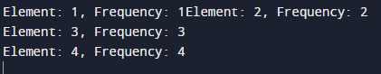

<!DOCTYPE html>
<html>
<head>
    <link rel="stylesheet" type="text/css"  href="../java-style.css" />
<title>Website</title>
</head>
<body>
<div class="menu">
    <h1 class="logo">Rana<span>Code</span>Runner.</h1>
    <ul>
        <li><a href="../../index.html">Home</a></li>
        <li>
            <a href="#">Menu <i class="fas fa-caret-down"></i> </a> 
            <div class="dropdown">
            <ul>
                <li><a href="#">HTML</a></li>
                <li><a href="#">CSS</a></li>
                <li><a href="#">DS</a></li>
                <li><a href="../../DBMS/dbms_topic.html">DBMS</a></li>
                <li><a href="../../php/php.htm">PHP</a></li>
                <li><a href="../../java/java-topics.html">JAVA</a></li>
            </ul>
            </div>
        </li>
        <li><a href="../../about us/About.html">About</a> </li>
        <li><a href="../../content/Content.html">Contact us</a> </li>
    </ul>
</div>
                <!-- for previous button -->
<section class="hero">
    &nbsp;
    <div class="container">
        <a href="../1Darray/1Darray.htm" class="previous">&laquo; Previous</a>
        </div>
               <!-- making output -->
<div class="content">
          <h1>Program to find the frequency of each element in the array </h1>
          <h2>Code:-</h2>
          <pre><br>
            import java.util.HashMap;
            import java.util.Map;
            class a {
            
                public static void main(String[] args) {
            
                    // test array
                    int arr[] = {1, 2, 2, 3, 3, 3, 4, 4, 4, 4};
            
                    // use a HashMap to count frequencies
                    HashMap<Integer, Integer> count = new HashMap<>();
            
                    // iterate over each element in the array
                    for (int num : arr) {
            
                        // if the count map already contains this element, increment its count
                        if (count.containsKey(num)) {
                            count.put(num, count.get(num) + 1);
                        }
            
                        // otherwise, add this element to the count map with a count of 1
                        else {
                            count.put(num, 1);
                        }
                    }
            
                    // print the frequency of each element in the array
                    for (Map.Entry<Integer, Integer> entry : count.entrySet()) {
                        System.out.println("Element: " + entry.getKey() + ", Frequency: " + entry.getValue());
                    }
                }
            }
          </pre>
          <h2>Output:-</h2>
          
</div>
</section>